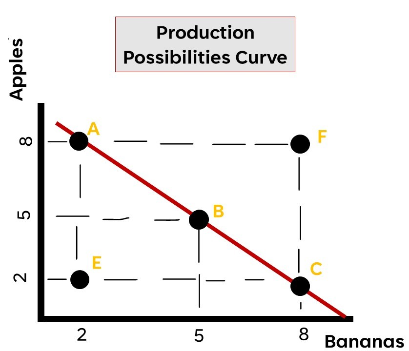

Scarcity
Factors of Production
Land - natural resources, space
Labor - humans
Capital - human and physical
Entrepreneurship - ex) Gates, Zuckerberg
Opportunity Cost and the Production Possibilities
Conditions: Only two goods, resources and technology fixed
The curve is used to calculate the productivity of a nation. Dots to the left of the curve (E) indicate an
inefficient use of resources,
dots above the curve (F) indicates a level of productivity only possible with improved technology, and points on
the curve (A,B,C) indicate
maximum productivity.
Comparative Advantage and Trade
Absolute advantage - the ability to produce more of a good or service with a given amount of resources
Comparative Advantage - the country that produces a good at the lowest opportunity cost.
Example:
| Country | Iron | Gold |
|---|---|---|
| Canada | 100 million tons | 500 million tons |
| Japan | 1,200 million tons | 300 million tons |
Steel: Canada (Absolute Advantage) | Japan (Comparative Advantage)
Demand Curve

Determinants of Demand
- Income
- Number of Buyers
- Substitutes
- Expectations of Future Prices
- Compliments
- Tastes and Preferences
Supply Curve

As the price level increases, the quantity supplied for producers will increase. By the same token, as the
price level decreases, the quantity supplied for producers will decrease.
Determinants of Supply
- Resource costs and availability
- Other goods' prices (compliments and substitutes in production)
- Technology/Productivity
- Taxes and subsidies/other gvt. actions
- Expectations for the future
- Number of sellers/producers
Market Equilibrium

The market equilibrium (and the equilibrium price) is determined by the demand and supply curve
The market equilibrium is when the quantity demanded and the quantity supplied are equal.